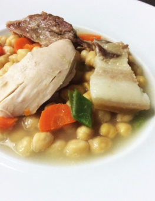

0
Inicio
Reserva
Contacto

De Cuchara
Puchero de Garbanzos
⭐⭐⭐⭐⭐
5,90€
5,00€
Puchero al estilo de la abuela, hecho con garbanzos secos seleccionados además de carnes y verduras de proximidad.
Ingredientes: Garbanzos de nuestra tierra, Pollo, Cerdo y Tocino Ibérico, Hueso salado, Zanahorias, Col, Judías verdes y Patatas
Añadir al carrito